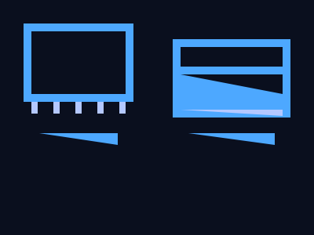

<!DOCTYPE html>
<html>
<head>
    <meta charset="UTF-8">
    <link rel="icon" type="image/png" href="/favicon.png">
    <meta name="viewport" content="width=device-width, initial-scale=1.0">
    <title>实用：认识电脑硬代/title>
    <style>
        * { margin: 0; padding: 0; box-sizing: border-box; }
        body { font-family: -apple-system, BlinkMacSystemFont, 'Segoe UI', 'Microsoft YaHei', sans-serif; background: #0a0f1e; color: #e0e8f0; height: 100vh; overflow: hidden; }
        .presentation { width: 100%; height: 100vh; position: relative; }
        .slide { position: absolute; inset: 0; display: flex; flex-direction: column; align-items: center; justify-content: center; padding: 60px; opacity: 0; pointer-events: none; transition: opacity 0.25s ease; will-change: opacity; }
        .slide.active { opacity: 1; pointer-events: auto; }
        .slide-inner { max-width: 840px; width: 100%; background: rgba(20, 30, 50, 0.6);  border: 1px solid rgba(77, 168, 255, 0.2); border-radius: 28px; padding: 44px 54px; box-shadow: 0 0 50px rgba(0,0,0,0.4); max-height: 82vh; overflow-y: auto; }
        .slide-title .slide-inner { text-align: center; background: rgba(20, 30, 50, 0.4); border-color: rgba(77, 168, 255, 0.15); }
        .slide-title h1 { font-size: clamp(32px, 5vw, 52px); font-weight: 800; background: linear-gradient(135deg, #4da8ff, #b0e0ff); -webkit-background-clip: text; background-clip: text; color: transparent; line-height: 1.2; margin-bottom: 12px; }
        .slide-title .sub { font-size: 18px; color: rgba(255,255,255,0.4); }
        .slide-title .lesson-num { font-size: 14px; color: rgba(255,255,255,0.25); margin-bottom: 18px; letter-spacing: 3px; }
        .slide h2 { font-size: clamp(22px, 3vw, 32px); font-weight: 700; color: #4da8ff; margin-bottom: 18px; padding-bottom: 10px; border-bottom: 1px solid rgba(77, 168, 255, 0.15); }
        .slide p { font-size: 17px; line-height: 1.8; margin-bottom: 12px; color: rgba(255,255,255,0.85); }
        .slide ul { margin: 8px 0 12px 20px; }
        .slide li { font-size: 16px; line-height: 1.7; margin-bottom: 5px; color: rgba(255,255,255,0.8); }
        .slide li strong { color: #b0e0ff; }
        .slide .highlight-box { background: rgba(77, 168, 255, 0.08); border-left: 4px solid #4da8ff; padding: 16px 20px; border-radius: 0 12px 12px 0; margin: 14px 0; font-size: 15px; }
        .slide .tip-box { background: rgba(255, 200, 0, 0.06); border-left: 4px solid #ffc800; padding: 14px 18px; border-radius: 0 10px 10px 0; margin: 14px 0; font-size: 15px; }
        .nav-bar { position: fixed; bottom: 30px; left: 50%; transform: translateX(-50%); display: flex; align-items: center; gap: 16px; background: rgba(10, 15, 30, 0.7);  border: 1px solid rgba(255,255,255,0.06); border-radius: 30px; padding: 10px 20px; z-index: 10; }
        .nav-bar button { background: none; border: none; color: rgba(255,255,255,0.4); font-size: 18px; cursor: pointer; padding: 6px 12px; border-radius: 8px; transition: all 0.2s; }
        .nav-bar button:hover { color: #fff; background: rgba(255,255,255,0.06); }
        .nav-bar .counter { font-size: 14px; color: rgba(255,255,255,0.35); min-width: 60px; text-align: center; }
        .nav-bar .back-link { color: rgba(255,255,255,0.25); text-decoration: none; font-size: 13px; padding: 6px 12px; border-radius: 8px; transition: all 0.2s; }
        .nav-bar .back-link:hover { color: #fff; background: rgba(255,255,255,0.06); }
        @media (max-width: 640px) { .slide { padding: 16px; } .slide-inner { padding: 24px 18px; } .nav-bar { padding: 8px 12px; gap: 8px; bottom: 14px; } }
    </style>
</head>
<body>
    <div class="presentation" id="presentation">
        <div class="slide slide-title active" data-index="0">
            <div class="slide-inner">
                
                <div class="lesson-num">实用 · 第二试/div>
                <h1>认识电脑硬件</h1>
                <div class="sub">机箱里到底有什么？</div>
            </div>
        </div>
        <div class="slide" data-index="1">
            <div class="slide-inner">
                <h2>电脑的四大核心部代/h2>
                <p>任何一台电脑，不管台式还是笔记本，都由这四样组成：</p>
                <ul>
                    <li><strong>CPU</strong>（处理器）—电脑的大脑，负责计算</li>
                    <li><strong>内存</strong>（RAM）—短期记忆，正在运行的程序存在这里</li>
                    <li><strong>硬盘</strong>（存储）—长期记忆，文件、系统、软件都存在这里</li>
                    <li><strong>主板</strong> —把以上所有东西连在一起的大底来/li>
                </ul>
            </div>
        </div>
        <div class="slide" data-index="2">
            <div class="slide-inner">
                <h2>CPU（处理器！/h2>
                <p>CPU 是电脑的"大脑"——执行所有计算和指令、/p>
                <ul>
                    <li>两大品牌！strong>Intel</strong>（酷着i3/i5/i7/i9）和 <strong>AMD</strong>（锐龀R3/R5/R7/R9！/li>
                    <li>核心数越多，能同时处理的任务越多！ 核、 核、 核）</li>
                    <li>频率（GHz）越高，单个任务跑得越快</li>
                    <li>日常办公 i5 / R5 就够用，玩游戏或视频剪辑需要i7 / R7 以上</li>
                </ul>
            </div>
        </div>
        <div class="slide" data-index="3">
            <div class="slide-inner">
                <h2>内存（RAM！/h2>
                <p>内存是工作参——打开的程序和文件都放在内存里。内存越大，同时开的东西越多、/p>
                <ul>
                    <li>8GB —日常办公上网<strong>够用</strong></li>
                    <li>16GB —玩游戏、编程、多开浏览器strong>推荐</strong></li>
                    <li>32GB —视频剪辑、虚拟机、大型设设strong>充裕</strong></li>
                </ul>
                <div class="highlight-box">内存一断电就清空。所以没保存的文档一断电就丢了。硬盘不会丢、/div>
            </div>
        </div>
        <div class="slide" data-index="4">
            <div class="slide-inner">
                <h2>硬盘（存储）</h2>
                <p>硬盘是仓库"——存操作系统、软件、照片、电影，断电也不丢、/p>
                <ul>
                    <li><strong>机械硬盘（HDD！/strong> —容量大便宜，但慢！400/7200 转）</li>
                    <li><strong>固态硬盘（SSD！/strong> —速度快，开有10 秒，但容量小价格髀/li>
                </ul>
                <div class="highlight-box">老电脑换一SSD，速度提升最明显！把 Windows 装在 SSD 上，开机从 2 分钟参10 秒、/div>
            </div>
        </div>
        <div class="slide" data-index="5">
            <div class="slide-inner">
                <h2>显卡（GPU！/h2>
                <p>显卡负责把图像渲染到屏幕上。电脑能显示的画质取决于它、/p>
                <ul>
                    <li><strong>集成显卡</strong> —CPU 自带的，日常够用，打不了大型游戏</li>
                    <li><strong>独立显卡</strong> —单独的硬件，玩游戏、视频剪辑、AI 绘图必备</li>
                    <li>常见品牌：NVIDIA（RTX 系列）、AMD（RX 系列！/li>
                </ul>
                <div class="tip-box">不玩游戏、不做设计的话，集成显卡完全够用，省电又省钱、/div>
            </div>
        </div>
        <div class="slide" data-index="6">
            <div class="slide-inner">
                <h2>怎么看自己电脑的配置！/h2>
                <p>不用拆机箱，Windows 里就能看！/p>
                <ul>
                    <li><strong>任务管理器/strong> ↀ性能标签 —实时看CPU/内存/硬盘/显卡</li>
                    <li><span class="key">Win</span> + <span class="key">R</span> ↀ<code>dxdiag</code> —详细信息，包括显卡型参/li>
                    <li>设置 ↀ系统 ↀ关于 —基本配置概览</li>
                </ul>
                <div class="tip-box">买电脑时看懂 CPU + 内存 + 硬盘 + 显卡这四个参数就够了、/div>
            </div>
        </div>
        <div class="slide" data-index="7">
            <div class="slide-inner">
                <h2>总结</h2>
                <ul>
                    <li>CPU = 大脑，Intel i5 / AMD R5 日常够用</li>
                    <li>内存 = 工作台，8GB 起步！6GB 舒服</li>
                    <li>硬盘 = 仓库，系统装 SSD，文件放 HDD</li>
                    <li>显卡 = 画师，不玩游戏用集成就行</li>
                    <li>老电脑升级：加内字+ 据SSD = 重获新生</li>
                </ul>
            </div>
        </div>
    </div>
    <div class="nav-bar">
        <a class="back-link" href="index.html">ↀ目录</a>
        <button id="prevBtn">◀</button>
        <span class="counter" id="counter">1 / 8</span>
        <button id="nextBtn">▀/button>
    </div>
    <script>
        const slides = document.querySelectorAll('.slide'); const total = slides.length; let current = 0;
        function goTo(n) { slides[current].classList.remove('active'); current = (n + total) % total; slides[current].classList.add('active'); document.getElementById('counter').textContent = (current + 1) + ' / ' + total; }
        document.getElementById('prevBtn').addEventListener('click', () => goTo(current - 1));
        document.getElementById('nextBtn').addEventListener('click', () => goTo(current + 1));
        document.addEventListener('keydown', (e) => { if (e.key === 'ArrowRight' || e.key === 'ArrowDown' || e.key === ' ') { e.preventDefault(); goTo(current + 1); } if (e.key === 'ArrowLeft' || e.key === 'ArrowUp') { e.preventDefault(); goTo(current - 1); } });
        document.getElementById('presentation').addEventListener('click', (e) => { if (e.target.closest('.nav-bar') || e.target.closest('.slide-inner')) return; goTo(current + 1); });
    </script>
</body>
</html>